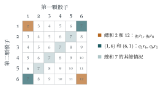

STEP I 1999，第 12 題
繼續之前，請先閱讀題目（原題為英文）。題目載於 STEP Support Programme 的題目資料庫： step.maths.org/questions/99-s1-q12
引子
擲兩顆公平骰子時，點數總和為 \(7\) 的可能性是總和為 \(2\) 的六倍。桌上遊戲的設計者有時會希望情況並非如此：能否在骰子上做手腳（加上配重，使某些面較常出現），令 \(2\) 至 \(12\) 的每個總和都有相同的機會，即 \(\frac{1}{11}\)？那十二個概率（probability）可以任你選擇，看來迴旋的餘地相當充裕。
答案是不能，而證明堪稱一絕：它只用到十一個總和中的三個，以及不等式（inequality）\(x + \frac1x \geq 2\)。這是證明某件事不可能的典範；與證明某件事辦得到相比，這往往更難，也更有趣。
動筆之前
對於 \(x > 0\)，你會怎樣證明 \(x + \frac1x \geq 2\)？等號何時成立？
兩邊同乘 \(x > 0\)：不等式變成 \(x^2 + 1 \geq 2x\)，即 \((x - 1)^2 \geq 0\)，這顯然成立。等號只在 \(x = 1\) 時成立。（另一做法是 \(x + \frac1x - 2 = \bigl(\sqrt x - \frac{1}{\sqrt x}\bigr)^2\)。）這是算術平均—幾何平均不等式（AM–GM inequality）最簡單的形式：\(x\) 與 \(\frac1x\) 的平均值不小於它們的幾何平均（geometric mean）\(1\)。
逐步解題
階段 1 兩端的總和
擲出總和 \(2\) 有多少種方法？總和 \(12\) 呢？試以 \(q_i\) 和 \(r_j\) 表示它們的概率。
總和為 \(2\) 需要兩顆骰子都擲出 \(1\)，總和為 \(12\) 則需要兩顆都擲出 \(6\)，所以 \(\mathrm{P}(2) = q_1r_1\) 及 \(\mathrm{P}(12) = q_6r_6\)。
為了引出矛盾，假設全部十一個總和的可能性相等，每個的概率都是 \(\frac{1}{11}\)。那麼 \[q_1r_1 = \frac{1}{11}, \qquad q_6r_6 = \frac{1}{11}.\] 特別地，\(q_1\)、\(r_1\)、\(q_6\)、\(r_6\) 四者全為正數。
階段 2 中間的總和
總和 \(7\) 可以由六種方法得出。其中哪兩種只涉及 \(1\) 和 \(6\) 這兩個面？試利用上面的等式寫出它們的概率。
總和 \(7\) 包括結果（\(1\), \(6\)）和（\(6\), \(1\)），所以 \[\mathrm{P}(7) \geq q_1r_6 + q_6r_1.\] 現在利用第 1 步的等式引入一個比。由於 \(q_1 = \frac{1}{11r_1}\) 及 \(q_6 = \frac{1}{11r_6}\)， \[q_1r_6 + q_6r_1 = \frac{1}{11}\Bigl(\frac{r_6}{r_1} + \frac{r_1}{r_6}\Bigr) \geq \frac{1}{11} \times 2 = \frac{2}{11},\] 這裏用了 \(x + \frac1x \geq 2\)，其中 \(x = r_6/r_1 > 0\)。因此 \(\mathrm{P}(7) \geq \frac{2}{11}\)，與 \(\mathrm{P}(7) = \frac{1}{11}\) 矛盾。各個總和不可能全部等可能。■
看看這個證明為何行得通。要令 \(2\) 和 \(12\) 與 \(7\) 同樣可能出現，\(1\) 和 \(6\) 就必須有相當高的概率，於是單憑（\(1\), \(6\)）和（\(6\), \(1\)）這兩個「混合」結果，已足以令 \(7\) 的概率過高。圖 9.13.1 顯示了所涉及的方格。

階段 3 同一顆骰子擲兩次
如果把一顆骰子擲兩次，兩次點數相同的概率是多少？試以 \(q_j\) 表示。對公平骰子而言，這個概率是多少？
兩次擲出相同點數的概率是 \(q_1^2 + q_2^2 + \cdots + q_6^2\)。對公平骰子而言，這是 \(6 \times \frac{1}{36} = \frac16\)，已經遠大於 \(\frac{1}{36}\)。
在骰子上做手腳，能否令 \(\sum q_j^2\) 小於 \(\frac16\)？你知道 \(\sum q_j = 1\)。
寫成 \(q_j = \frac16 + e_j\)，其中各偏差 \(e_j\) 之和為零。那麼 \[\sum q_j^2 = \sum\Bigl(\frac{1}{36} + \frac{e_j}{3} + e_j^2\Bigr) = \frac16 + \frac13\sum e_j + \sum e_j^2 = \frac16 + \sum e_j^2 \geq \frac16.\] 所以擲出重複點數的概率必定不小於 \(\frac16\)，而且只有公平骰子才令等號成立。它當然不可能小於 \(\frac{1}{36}\)。■
回顧
反證法（proof by contradiction）。我們假設所有總和等可能，然後推出不可能成立的結論。
只用所需的條件。十一條等式之中，三條已經足夠。選對等式正是關鍵的一步。
以不等式證明不可能。第 (i) 部分的算術平均—幾何平均不等式，以及第 (ii) 部分的「平方和非負」，都一舉排除了一整類的可能性。
背後的數學
用多項式來證明
以下是一個完全不同的證明，用的是 第 9.6 節 的生成函數（generating function）。設 \(Q(x) = q_1x + \cdots + q_6x^6\) 及 \(R(x) = r_1x + \cdots + r_6x^6\)。假如所有總和的概率都是 \(\frac{1}{11}\)，則 \[Q(x)R(x) = \frac{x^2 + x^3 + \cdots + x^{12}}{11} = \frac{x^2}{11}\bigl(1 + x + \cdots + x^{10}\bigr).\] 現在 \(Q(x)/x\) 是一個 \(5\) 次實係數多項式（polynomial），而每個奇數次的實多項式都有一個實根（它的圖像由 \(-\infty\) 走到 \(+\infty\)，或者反過來）。所以左邊有一個非零的實根。但 \(1 + x + \cdots + x^{10} = \frac{x^{11} - 1}{x - 1}\)，它的根是 \(1\) 以外的 \(11\) 次單位根（roots of unity），當中沒有一個是實數。矛盾。同樣的論證表明，只要 \(n - 1\) 是奇數，即 \(n\) 是偶數，無論怎樣在兩顆 \(n\) 面骰子上做手腳，都不能令各個總和等可能。（當 \(n\) 是奇數時，多項式的論證需要多花些工夫，但上面的算術平均—幾何平均證明對每個 \(n \geq 2\) 都適用。）
碰撞概率
第 (ii) 部分中的量 \(\sum q_j^2\)，即兩次獨立抽取結果相同的機會，稱為一個分佈的碰撞概率（collision probability）。第 (ii) 部分表明，均勻分佈（uniform distribution）的碰撞概率最小。它量度一個分佈有多集中：在生態學中，\(\sum q_j^2\) 是辛普森多樣性指數（Simpson’s index of diversity），其中 \(q_j\) 是物種 \(j\) 在某個生境中所佔的比例；在經濟學中，它是量度市場集中度的赫芬達爾指數（Herfindahl index）；在密碼學中，它量度一個密碼分佈有多容易被猜中。它也解釋了 第 9.9 節 結尾的那句話：各個生日的概率不相等，只會令生日相同的情況更有可能出現。
數學中一些最著名的結果，說的正是某件事辦不到：沒有分數的平方等於 \(2\)；沒有尺規作圖法能三等分任意角；沒有根式公式能解所有五次方程；沒有算法能判定每一個數學命題。每一個這樣的結果都改變了所屬的學科，因為要證明沒有任何方法行得通，就必須了解所有方法構成的整個空間。灌鉛骰子問題是一個縮影：要排除每一種做手腳的方式，我們需要一個每種方式都必須遵守的不變性質（算術平均—幾何平均不等式）。
思維技巧
要證明沒有任何參數的選取行得通，先假設有一組行得通，找出互相抵觸的那幾個條件，再用不等式證明它們不可能同時成立。
在大學裏，反證法配合不等式是證明某些對象不存在的標準方法，見於分析、組合數學和最優化；在這些領域中，算術平均—幾何平均不等式和柯西—施瓦茲不等式（Cauchy–Schwarz inequality）這類不等式為可達到的結果設下了界限。
延伸練習
柯西—施瓦茲不等式。利用柯西—施瓦茲不等式 \(\bigl(\sum a_jb_j\bigr)^2 \leq \sum a_j^2\sum b_j^2\)，取 \(a_j = q_j\) 及 \(b_j = 1\)，為第 (ii) 部分給出一行的證明。
兩顆不同的骰子。如果把兩顆不同的灌鉛骰子各擲一次，它們點數相同的概率能否小於 \(\frac16\)？能否等於 \(0\)？
面上數字不同時的均勻總和。證明如果兩顆骰子各面的數字另作安排，它們可以給出等可能的總和：試取一顆骰子的數字為 \(0, 1, 2, 3, 4, 5\)，另一顆為 \(0, 6, 12, 18, 24, 30\)。會出現哪些總和？為甚麼這與題目並不矛盾？
三顆骰子。三顆各面為 \(1\) 至 \(6\) 的六面灌鉛骰子，能否令 \(3\) 至 \(18\) 的所有總和等可能？（提示：利用總和 \(3\)、\(8\)、\(13\) 和 \(18\)，以及六個數的算術平均—幾何平均不等式。為甚麼多項式證明這次行不通？）
延伸閱讀
J. Michael Steele, The Cauchy–Schwarz Master Class（Cambridge University Press）。一本出色的不等式入門書，由算術平均—幾何平均不等式講起。
Geoffrey Grimmett & Dominic Welsh, Probability: An Introduction（Oxford University Press）。講述生成函數，以及它們在上述這類證明中的應用。
Ian Stewart, Galois Theory（CRC Press），開首數章。最著名的不可能性證明：五次方程。